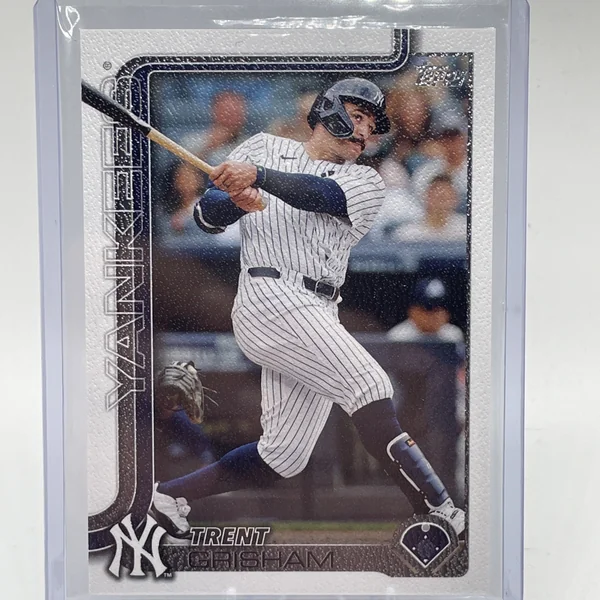

Trent Grisham "Grish"
Career Highlights & Facts
(Facts are AI-generated and may require verification)
- Selected as a 1st round draft pick with the 15th overall selection.
- Possesses a career defensive profile primarily anchored in center field.
- Included as a key piece in a major trade involving a generational superstar.
Would you like to find out more about Trent Grisham?
Player Biography
Trent Grisham April 4, 2022 / in BioProject - Person / by admin This bio is not assigned. Want to write a SABR bio? Contact bioproject@sabr.org . No items found Full Name Trenton Marcus Grisham Born November 1, 1996 at Burleson, TX (USA) Stats Baseball Reference Retrosheet If you can help us improve this player’s biography, contact us . Tags None Share this entry Share on Facebook Share on X Share on LinkedIn Share on Reddit Share by Mail
Wikipedia Summary:
Trenton Marcus Grisham is an American professional baseball center fielder for the New York Yankees of Major League Baseball (MLB). He has previously played in MLB for the Milwaukee Brewers, and San Diego Padres.
Career Totals
| WAR | AB | H | HR | BA | R | RBI | SB | OBP | SLG | OPS | OPS+ |
|---|---|---|---|---|---|---|---|---|---|---|---|
| 14.9 | 2586 | 558 | 110 | .216 | 387 | 347 | 53 | .320 | .398 | .718 | 99 |
Statistics via Baseball-Reference.com
The Original Clue